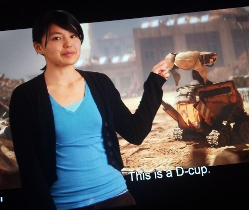
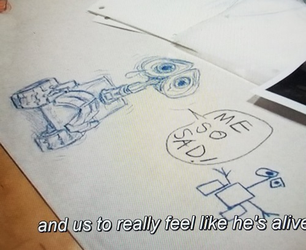
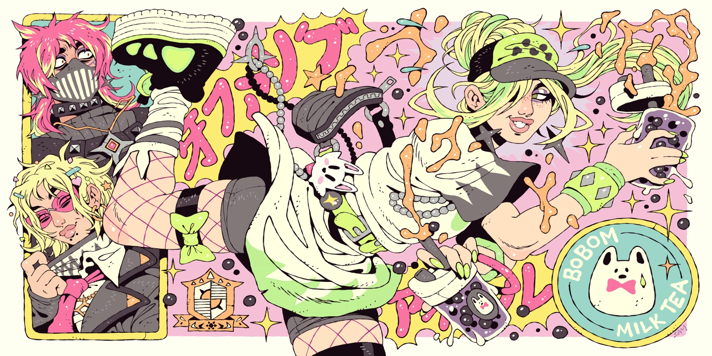
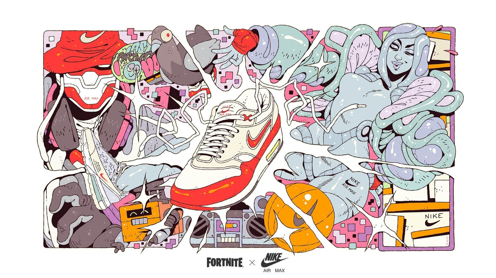
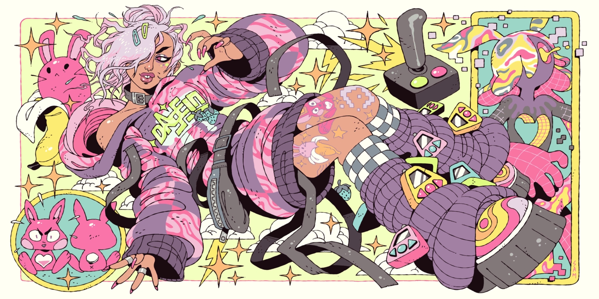
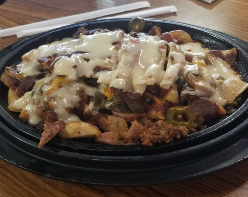
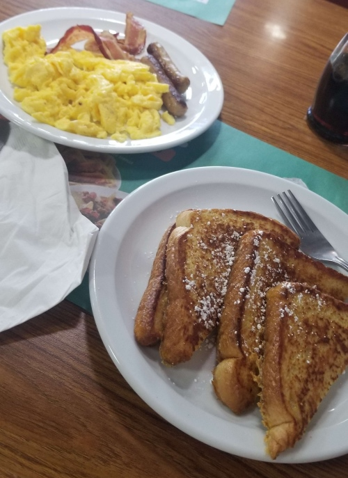

28.jun.23
finding joy in the little things like cooking my own dishes and going yum
 oh well it was pretty good. and some chicken with, again, cooked with that stir fry sauce. im kinda obsessed with that stir fry sauce
oh well it was pretty good. and some chicken with, again, cooked with that stir fry sauce. im kinda obsessed with that stir fry sauce
i need to learn more recipes and stuff. i should learn how to properly cook rice bc wow the many things you can do with rice is fascinating. but every time i do some plain ol white rice its kinda... just ok. so i need to practice my rice cooking skill.
23.jun.23
diary log update! i am trying to hold it all together  but i do wanna share some things i've done / seen the past week!
but i do wanna share some things i've done / seen the past week!
i think first thing i wanna share is that ive been getting into neko atsume... again!!!
i havent played it in such a while. i really missed those silly little cats on my phone
so yeah i've been having a lot of fun with that! i look at them and i smile. its very simple
i've been rewatching some of my all time fav movies like wall-e and surf's up!
i ordered a bluray of surf's up on ebay for like $5 (what a steal...) because WOW i just love this movie so so so much. to me? it is perfect. i honestly just love the whole mockumentary style and how damn well they make it work for a animated cg movie. i cant wait for the disk to arrive so i can watch the bonus features. its so interesting watching the behind the scenes and listening to the director's commentary for my fav movies. i love knowing the bits of how they were made. which now brings me to wall-e.
i love wall-e. i remember watching it in theaters. and it was amazing. i really loved it. i loved it so much that my parents got me the blu ray of it as a christmas gift that same year. that i still own (and it still works given how scratched that disk is LOL) to this day, 13 years later!!!!! its one of those that have a bonus disk with the bonus features so thats what i've been watching for the past 2 days. and it so cool to see all the progress and how it was made.

also watched the movie with the director's (andrew stanton) commentary. very cool stuff. and what i love about this version is that it also showed me concept art throught the commentary as well! so cool. something interesting i learned is that he didnt really have in mind to make a movie with humanity in it. it was actually supposed to be aliens! thats why the humans in wall-e look like... blobs i'd say.
while explaining wall-e's child like wonder, he was saying how he remembers looking at a eyelash curler when little and thinking that was some torture device and i was like ??? bc I ALSO THOUGHT THE SAME THING! that was so funny. did any of you also thought that it was a torture device when you were little?
besides that he also mentioned that he didnt exactly have an agenda (lol) with the story of wall-e lol but, and i quote
"we had fun poking at large corporations, i mean we work for one"and i found that so fucking funny. i giggled
onto another topic, i just wanna give this artist that is commissioned frequently by epic games to make loading screens for fortnite: sam mckenzie. i love love LOVE their art style so much. its so easily to distinguish too! one of my (many) visual art inspirations. here are some of the loading screens they have done for fortnite



i also went out today to a mall and saw some cool stuff i'd like to share. hover over them for comments :]
a tiny website update: STILL working very hard on my mizu shrine! i swear its almost finished tho  and soon i should be working on my scans page! i scanned some cute stationary (notepads, stickers) i had around my desk, as well as the albums that i own. i also wanna redo my about page since im not so saatisfied with it... but that is all i have in mind for the site so far!
and soon i should be working on my scans page! i scanned some cute stationary (notepads, stickers) i had around my desk, as well as the albums that i own. i also wanna redo my about page since im not so saatisfied with it... but that is all i have in mind for the site so far!
and thats is it for today. take care everyone!
 listening to koi wa hyakunen sensou by soutaiseiriron
listening to koi wa hyakunen sensou by soutaiseiriron
18.jun.23
scanning my albums and taking pics of my plushies!!! so i can work on those pages showcasing my stuff in the future  cant wait! i love (most) of my albums very dearly. they have a special place in my heart. i wish i had a source of income so i could get more!!! but i guess eventually... i still havent had much luck landing a job... sigh... but oh well. and besides that, i also need to get a new CD player cus the one i have doesnt work anymore? just out of nowhere like that. i've tried cleaning it and everything but nothing :((( sucks cus i love playing the CDs of my albums
cant wait! i love (most) of my albums very dearly. they have a special place in my heart. i wish i had a source of income so i could get more!!! but i guess eventually... i still havent had much luck landing a job... sigh... but oh well. and besides that, i also need to get a new CD player cus the one i have doesnt work anymore? just out of nowhere like that. i've tried cleaning it and everything but nothing :((( sucks cus i love playing the CDs of my albums 
i also wanna do something new for the not found something cuter maybeeee. and cat related :3
9.jun.23
went to see transformers: rise of the beasts yesterday, pretty fun movie tbh! bumblebee....  i love bumblebee so much its kinda crazy
i love bumblebee so much its kinda crazy
TODAY !!!!! i will go on a walk. i really really really NEED to walk and just like. move my body more. so i dont pass out next time i try to do a hike LOL... but yeah.
new fortnite season happened today! cant wait to play it later
8.jun.23
 i also got this very cute honey bee neckclase too!!!
i also got this very cute honey bee neckclase too!!! ) so im glad i got the chance to do this
) so im glad i got the chance to do this
today i'm gonna go watch the new transformers movie in theaters! i had watched bumblebee (HES SO CUTEEEEEEEEEEEEEEE  ) beforehand a few days ago to prepare for this new one so im pretty excited to see it!
) beforehand a few days ago to prepare for this new one so im pretty excited to see it!
so besides that i will also be watching a bit of the summer game fest in a bit. and i've been also playing fortnite A LOT before the new season starts!!! pretty exciting stuff
and a site update: my updates with this site have def been slowing down a bit. i think mostly due to motivation? but i am still working on that mizu shrine!!! its taking a while but i cant wait to be able to finish it so all of you can know him better :3
3.jun.23
won my first ranked duo match in fortnite yesterday!!!! super happy for tbh!!
heres a pic of me and my teammate LOL. i also got this skin yesterday as a bday present for myself. its so customizable!!

my character is the one sitting on the window, and my duo bestie is the driver
listening to across the spiderverse (start a band) by daniel pemberton
2.jun.23
well!! its here! its my birthday!! wow. i am 23 years old today. wow. honestly i dont have much to say about me being 23 years old. sooo i'll write about what ive been doing these couple of days. man its so fucking hot and i have a fan to my face and i also have a runny nose cus allergies not cool
i wanna start off by saying happy pride month!! yesterday i went to see spider-man: across the spiderverse and MANNNNNNNNNN............................. 
 THAT WAS SO GOODDDDDD HOLY SHIT. that movie was genuinely was of the BEST experiences i've had with like any film. ever. like oh my god. i just. i was so overwheled the entire time and not even in a bad way! i felt i was on edge the entire time bc of the drama. but also this is such a wonderful movie to look and listen to. the colors of this are just so fucking gorgeus. and the music was banging as well. like there was so many parts of the movie where the music REALLY add to it and so much. it was phenomenal. i am completely amazed at how good the spiderverse movies have come out so far. like this is truly a love letter to animation. what a fantastic experience i reallyy do not have the words to tell how good this movie was. if you have the chance please go and watch it!!!! spoilers incoming my heart dropped to the bottom when i saw that miles was "actually" supposed to become prowler in the world where he doesnt get bit by a spider... like fear. i felt so horrible. and i loved it. i loved how horrying it felt to know that everything miles was doing was actually going to hurt even more people. i really cant wait for the 2nd part. which BTW i totally forgot this is a 2 part movie so when my bf told me that the movie would be ending soon soon i was like WHAT? but we just got to the climax JFHNKS. solid 5/5 movie. perfect. i loved the music so much. i need to say it again. usually movie soundtracks come out like a month or so after the theatrical release so I WILL be listening to that and putting it on my listening log.
THAT WAS SO GOODDDDDD HOLY SHIT. that movie was genuinely was of the BEST experiences i've had with like any film. ever. like oh my god. i just. i was so overwheled the entire time and not even in a bad way! i felt i was on edge the entire time bc of the drama. but also this is such a wonderful movie to look and listen to. the colors of this are just so fucking gorgeus. and the music was banging as well. like there was so many parts of the movie where the music REALLY add to it and so much. it was phenomenal. i am completely amazed at how good the spiderverse movies have come out so far. like this is truly a love letter to animation. what a fantastic experience i reallyy do not have the words to tell how good this movie was. if you have the chance please go and watch it!!!! spoilers incoming my heart dropped to the bottom when i saw that miles was "actually" supposed to become prowler in the world where he doesnt get bit by a spider... like fear. i felt so horrible. and i loved it. i loved how horrying it felt to know that everything miles was doing was actually going to hurt even more people. i really cant wait for the 2nd part. which BTW i totally forgot this is a 2 part movie so when my bf told me that the movie would be ending soon soon i was like WHAT? but we just got to the climax JFHNKS. solid 5/5 movie. perfect. i loved the music so much. i need to say it again. usually movie soundtracks come out like a month or so after the theatrical release so I WILL be listening to that and putting it on my listening log.
after that we went and ate at a golden corral. pretty alright place to eat at.
 and fast forward to today: my birthday! i got this superrr cute sakura miku from a friend!!! shes so cutee and now my bag looks even cuter bc of her. love her lots
and fast forward to today: my birthday! i got this superrr cute sakura miku from a friend!!! shes so cutee and now my bag looks even cuter bc of her. love her lots 
|
i went to denny's as well and i got some french toasts since i havent made or eaten some in a whileeeee and they were so yummy and good as well

what my bf ate. i tried that chicken and it was really good btw |

and this is what i ate. so yummy |
and thats pretty much it. i had a pretty nice bday. and im very glad. i giggled and i had lots of fun. i ate so many sweets tho i really need to start walking or something omg

in other news: i've been doing A LOT of progress with the mizu shrine!!!! i think it might get done for this week! im very excited to finish it :3
and thats all i have for today's log! take care everyone. i think i will play some fortnite now
listening to shower duty by meaningful stone